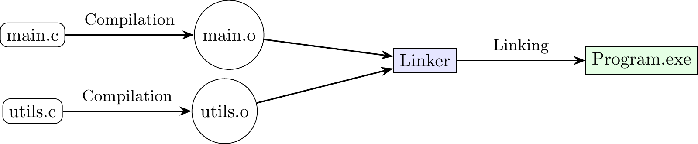
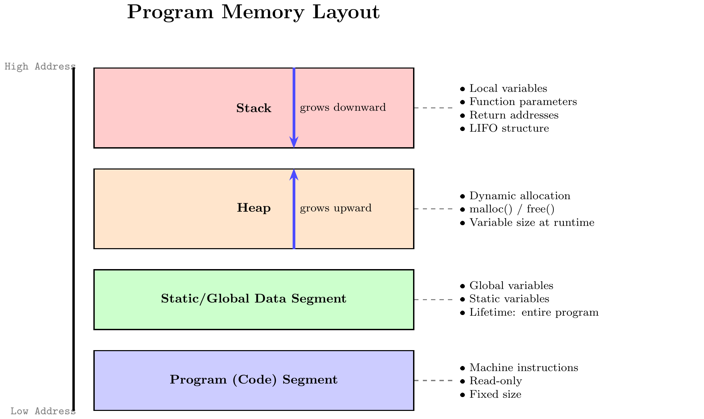

1. Introduction to C, Compilers, and Program Structure
1. Summary
1.1 The C Programming Language
The C programming language is a foundational, general-purpose language known for its efficiency and control over system hardware. Developed by Dennis Ritchie and Brian Kernighan, it is not considered a “very high-level” language, meaning it lacks some of the automatic safety features and abstractions of more modern languages. However, its generality and absence of restrictions make it highly effective for a wide range of tasks, particularly system-level programming like operating systems and embedded devices.
Key characteristics of C include:
- Middle-Level Language: C provides a balance between high-level abstractions (like functions and variables) and low-level control (like direct memory manipulation). It is sometimes called a “universal assembly language” because its constructs map closely to machine instructions.
- Compiled Language: C code is not executed directly. It must first be processed by a compiler, which translates the human-readable source code into machine code that the computer’s processor can understand and execute.
- Statically Typed: Every variable in C has a type (e.g.,
intfor integer,floatfor floating-point number), and this type is fixed when the code is compiled. While C is typed, it is not strongly typed, as it allows for various explicit and implicit type conversions. - Procedural: C follows a procedural paradigm, where programs are constructed from procedures, also known as functions or subroutines.
- Unsafe: C grants the programmer significant power, including direct memory access. This power comes with responsibility, as the language does not have built-in safeguards against common errors like accessing invalid memory locations, which can lead to program crashes or security vulnerabilities.
1.2 Essential Tools for C Programming
To write and run a C program, you only need two fundamental tools: a Text Editor and a C Compiler.
- Text Editor: This is any program used to write and edit plain text files. Examples include Notepad++, VS Code, Vim, or Emacs. The file containing C code is called a source file and is typically saved with a
.cextension (e.g.,program.c). - C Compiler: This is a specialized program that translates the C source code into an executable file containing machine instructions. The most common compiler is GCC (GNU Compiler Collection). While an Integrated Development Environment (IDE) like CLion or Visual Studio can be helpful, it is not strictly necessary; an IDE simply bundles a text editor, compiler, debugger, and other tools into a single application.
1.3 The Compilation Process
Creating an executable program from C source code involves several stages, managed primarily by the compiler and a tool called the linker.
A C program can be split across multiple .c files. Each file is considered a translation unit and is compiled independently. The overall process is as follows:
- Preprocessing: The preprocessor handles directives that start with
#, such as#include <stdio.h>. It copies the contents of the specified header file (stdio.h) directly into the source file. - Compilation (Source Code to Assembly): The compiler proper takes the preprocessed code and translates it into assembly language, which is a low-level, human-readable representation of machine instructions.
- Assembly (Assembly to Object Code): The assembler converts the assembly code into machine code. The result is an object file, which typically has a
.oor.objextension. This file contains the machine code for that specific translation unit but is not yet a complete, runnable program. It may have references to functions or variables defined in other files. - Linking: The linker’s job is to combine one or more object files into a single executable file. It resolves any cross-file references (e.g., when a function in
main.ccalls a function defined inutils.c) and links necessary code from standard libraries (like the library containingprintf). The final output is a runnable program.
1.4 Program Structure and Memory Model
A running program uses several distinct regions of memory, each with a specific purpose. This organization is known as the memory model.
- Program (Code) Segment: This region contains the compiled machine instructions of the program. It is typically read-only to prevent the program from accidentally modifying itself.
- Static/Global Data Segment: This holds global variables (declared outside any function) and static variables (declared with the
statickeyword). These variables exist for the entire lifetime of the program. - Heap: This is a region of memory available for dynamic allocation. It is used for data whose size is not known at compile time or that must outlive the function that created it. In C, memory on the heap is managed manually using functions like
malloc()andfree(). The heap typically grows upwards toward higher memory addresses. - Stack: This region of memory is used to manage function calls. It stores local variables (variables declared inside a function), function parameters, and return addresses. The stack operates on a Last-In, First-Out (LIFO) principle. When a function is called, a new stack frame (or activation record) is pushed onto the stack. This frame contains all the data associated with that function call. When the function returns, its stack frame is popped off, and the memory becomes available for the next function call. The stack typically grows downwards toward lower memory addresses.

1.5 Variables, Scope, and Storage Classes
A variable is a name for a location in memory that stores a value. In C, variables must be declared before they are used, specifying their type and name.
The scope of a variable defines the portion of the code where the variable is visible and can be accessed. C uses lexical scoping, where scope is determined by the structure of the source code. The primary unit of scope is the block, which is any section of code enclosed in curly braces {}.
- Block Scope: A variable declared inside a block (including function bodies, loops, and
ifstatements) is only visible from its point of declaration to the end of that block. - Variable Hiding (Shadowing): If a variable in an inner block has the same name as a variable in an outer block, the inner variable “hides” the outer one. The inner block will only be able to access its own local variable.
Storage classes are keywords that determine a variable’s lifetime (how long it exists in memory) and linkage (its visibility across different translation units).
auto: This is the default for variables declared inside a function. Anautovariable has a local lifetime; it is created when its block is entered and destroyed when the block is exited. It is stored on the stack.static:- When used inside a function,
staticgives a variable a static lifetime. The variable is created and initialized only once when the program starts and retains its value between function calls. - When used for a global variable,
staticlimits its visibility to only the file in which it is declared (internal linkage).
- When used inside a function,
extern: This keyword declares a variable without defining it. It tells the compiler that the variable exists and is defined in another source file. This is used to share global variables across multiple.cfiles.
2. Definitions
- Compiler: A program that translates source code written in a high-level programming language (like C) into low-level machine code that a computer’s processor can execute.
- Linker: A program that takes one or more object files generated by a compiler and combines them into a single executable file, shared library, or another object file.
- Source File: A text file containing human-readable instructions written in a programming language. In C, these files typically have a
.cextension. - Object File: A file containing machine code generated by a compiler or assembler from a source file. It is not yet a complete program and must be processed by the linker.
- Executable File: A file containing a complete program in machine code that can be run directly by the computer’s operating system.
- Translation Unit: A single source file after it has been processed by the C preprocessor. It is the basic unit of compilation.
- Stack: A region of computer memory that stores temporary variables created by each function. It operates in a Last-In, First-Out (LIFO) manner.
- Heap: A region of computer memory used for dynamic memory allocation, where the programmer can request and free blocks of memory as needed during runtime.
- Scope: The region of a program’s source code where a declared variable is visible and can be used.
- Storage Class: A specifier (
auto,static,extern,register) that determines the lifetime and visibility (linkage) of a variable or function.
4. Mistakes
- Forgetting Semicolons (
;): Every statement in C must end with a semicolon. Why it’s wrong: The semicolon tells the compiler where one statement ends and the next begins. Forgetting it is a syntax error that will prevent the code from compiling. - Using Assignment (
=) Instead of Comparison (==): Using a single equals sign in a conditional statement (e.g.,if (x = 5)) assigns the value5toxand the expression evaluates to5(which is treated as true). Why it’s wrong: This almost always leads to incorrect logic. The double equals sign==is required to test for equality. - Integer Division Truncation: When dividing two integers, C performs integer division, which discards any fractional part. For example,
7 / 2evaluates to3, not3.5. Why it’s wrong: This can lead to unexpected and incorrect mathematical results if you need precise floating-point answers. - Ignoring Compiler Warnings: Compilers often issue warnings about code that is syntactically correct but potentially problematic (e.g., using a variable before it has been initialized). Why it’s wrong: While the code might compile, warnings often point to logical errors or undefined behavior that can cause bugs or crashes at runtime.
- Forgetting to Include Header Files: Using a function like
printfwithout including the necessary header file (#include <stdio.h>) will cause a compilation error. Why it’s wrong: Header files contain the function declarations that tell the compiler what functions are available, what arguments they take, and what they return. Without this information, the compiler cannot verify the function call. - Accessing an Array Out of Bounds: Trying to access an element beyond the defined size of an array (e.g., accessing
arr[10]in an array of size 10, where valid indices are 0-9). Why it’s wrong: C does not check array boundaries. This leads to undefined behavior, which can corrupt memory, overwrite other variables, or crash the program.
5. Examples
5.1. Basic “Hello, World!” Program
Question: Write, compile, and describe the output of a standard “Hello, World!” program in C.
Click to see the solution
Write the C code and save it in a file named
hello.c. The code uses theprintffunction to print a string to the console. The#include <stdio.h>line is necessary because the declaration forprintfis in the standard input/output header file. Themainfunction is the entry point of every C program.#include <stdio.h> int main() { printf("Hello, World!\n"); return 0; }Compile the code using GCC from the command line. This command tells the compiler to take the source file
hello.cand produce an executable file namedhello.sh gcc hello.c -o helloRun the executable.
sh ./hello
Hello, World!
5.2. Variable Declaration and Arithmetic
Question: Write a C program that declares two integer variables, x and y, initializes them to 10 and 5 respectively, and then prints their sum, difference, product, and quotient.
Click to see the solution
Include the standard I/O header to use
printf.Define the
mainfunction.Declare and initialize two integer variables,
xandy.Use
printffor each operation. The%dformat specifier is a placeholder for an integer value. The\ncharacter creates a new line after each output.#include <stdio.h> int main() { int x = 10; int y = 5; printf("Sum: %d\n", x + y); printf("Difference: %d\n", x - y); printf("Product: %d\n", x * y); printf("Quotient: %d\n", x / y); return 0; }
Answer: The output of the program will be:
Sum: 15
Difference: 5
Product: 50
Quotient: 25.3. Integer vs. Floating-Point Division
Question: Write a program that demonstrates the difference between integer division and floating-point division using the numbers 7 and 2.
Click to see the solution
Declare integer variables for the first case and perform the division. The result will be truncated.
Declare floating-point variables (using the
floattype) for the second case. To ensure floating-point division, at least one of the operands must be a float. We initialize the variables as7.0fand2.0f.Print both results using the appropriate format specifiers (
%dfor integer,%ffor float).#include <stdio.h> int main() { // Integer division int int_a = 7; int int_b = 2; int int_result = int_a / int_b; printf("Integer Division (7 / 2): %d\n", int_result); // Floating-point division float float_a = 7.0f; float float_b = 2.0f; float float_result = float_a / float_b; printf("Floating-Point Division (7.0 / 2.0): %f\n", float_result); return 0; }
Answer: The program’s output highlights the difference clearly:
Integer Division (7 / 2): 3
Floating-Point Division (7.0 / 2.0): 3.5000005.4. Understanding Scope and Variable Shadowing
Question: Analyze the following C code and predict its output. Explain why the output is what it is.
#include <stdio.h>
int main() {
int x = 10; // Outer x
printf("1. Outer x: %d\n", x);
{ // Start of inner block
int x = 20; // Inner x, shadows the outer one
printf("2. Inner x: %d\n", x);
} // End of inner block
printf("3. Outer x again: %d\n", x);
return 0;
}Click to see the solution
- First
printf: The code is in the outer block ofmain. It accesses thexdeclared in this block, which has a value of10. - Second
printf: This statement is inside an inner block. A new variable, also namedx, is declared and initialized to20. This innerxshadows (hides) the outerx. Therefore,printfaccesses the innerx, printing20. - End of Inner Block: When the inner block ends (at the
}), its local variables (the innerx) are destroyed. - Third
printf: The code is now back in the outer block. The innerxno longer exists. Thexbeing accessed is the original outer variable, which still has its value of10.
Answer: The output of the program will be:
1. Outer x: 10
2. Inner x: 20
3. Outer x again: 105.5. A Simple if-else Conditional Program
Question: Write a C program that prompts the user to enter an integer and then prints whether the number is positive, negative, or zero.
Click to see the solution
Include
stdio.hforprintfandscanf.Declare an integer variable to store the user’s input.
Use
printfto display a prompt message to the user.Use
scanfto read an integer from the user’s input and store it in the variable. The&symbol is crucial; it passes the memory address of the variable soscanfknows where to store the value.Use an
if-else if-elsechain to check the value of the number and print the appropriate message.#include <stdio.h> int main() { int number; printf("Enter an integer: "); scanf("%d", &number); if (number > 0) { printf("The number is positive.\n"); } else if (number < 0) { printf("The number is negative.\n"); } else { printf("The number is zero.\n"); } return 0; }
Answer: The output depends on the user’s input. For example, if the user enters -5, the output will be:
Enter an integer: -5
The number is negative.5.6. Using the static Keyword in a Function
Question: Write a function that counts how many times it has been called. Use a static local variable to achieve this. Then, call this function multiple times from main to demonstrate that it works.
Click to see the solution
Define a function
call_counterthat takes no arguments and returnsvoid.Inside
call_counter, declare an integercountwith thestatickeyword and initialize it to0. Because it isstatic, it will be initialized only once when the program starts, not every time the function is called.Increment
countand print its current value.In the
mainfunction, use a loop to callcall_counterseveral times (e.g., 5 times).#include <stdio.h> void call_counter() { static int count = 0; // Initialized only once count++; printf("This function has been called %d time(s).\n", count); } int main() { call_counter(); call_counter(); call_counter(); call_counter(); call_counter(); return 0; }
Answer: The program’s output demonstrates that the count variable retains its value between function calls:
This function has been called 1 time(s).
This function has been called 2 time(s).
This function has been called 3 time(s).
This function has been called 4 time(s).
This function has been called 5 time(s).5.7. A Simple while Loop
Question: Write a program that uses a while loop to print the numbers from 1 to 5, each on a new line.
Click to see the solution
Include
stdio.h.In
main, declare an integer variable to act as a counter, and initialize it to1. Let’s call iti.Set up the
whileloop with the conditioni <= 5. The loop will continue to execute as long as this condition is true.Inside the loop, print the current value of
i.Crucially, increment
iinside the loop (i++). If you forget this step, the loop will run forever because the conditioni <= 5will always be true (an infinite loop).#include <stdio.h> int main() { int i = 1; // Initialize the counter while (i <= 5) { // Loop condition printf("%d\n", i); i++; // Increment the counter } return 0; }
Answer: The program will produce the following output:
1
2
3
4
5